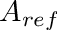

|
.
v1.2.41
|
|
.
v1.2.41
|

| Dependencies | NVIDIA CUDA 9.0+ |
|---|---|
| CMakeLists.txt | set( PLUGINS "radiation" ) |
| Header File | #include "RadiationModel.h" |
| Class | RadiationModel |
| Package | |||
|---|---|---|---|
| NVIDIA CUDA 9.0+ | Mac OSX:$ brew install Caskroom/cask/cuda | Use CUDA installer | Use CUDA installer |
For help choosing the correct CUDA toolkit version and accompanying OptiX version for your system, consult this page: Choosing the right CUDA and OptiX version
Useful OS-specific information for installing CUDA can be found here: Dependent Software
If you are using a PC, it is likely you will need to increase the GPU timeout in the registry, otherwise calculations lasting longer than 2 secs. will timeout and kill your program. A guide on how to increase the timeout can be found here: Increasing graphics driver timeout
This model simulates the transport of radiative energy for arbitrary wavelength bands using a GPU-accelerated ray-tracing model. The model details are described in Bailey (2018). Briefly, the model uses a reverse ray-tracing approach to simulate emission from primitive elements, collimated radiation sources, and point radiation sources.
| Constructors |
|---|
| RadiationModel( helios::Context* context ) |
The RadiationModel class is initialized by simply passing a pointer to the Helios context as an argument to the constructor. This gives the class the ability to automatically query model geometry and read/write from/to model data.
| Primitive Data | Units | Data Type | Description | Availalbe Plug-ins | Default Value |
|---|---|---|---|---|---|
| temperature | Kelvin | float | Primitive surface temperature. NOTE: Only needed if performing emission calculations. | Can be computed by EnergyBalanceModel plug-in | 300 K |
| reflectivity_* | unitless | float | Primitive reflectivity for band * (i.e., reflectivity for band 'PAR' would be 'reflectivity_PAR'). | N/A | 0 |
| transmissivity_* | unitless | float | Primitive transmissivity for band * (i.e., transmissivity for band 'PAR' would be 'transmissivity_PAR'). | N/A | 0 |
| emissivity_* | unitless | float | Primitive emissivity for band * (i.e., emissivity for band 'PAR' would be 'emissivity_PAR'). NOTE: Only needed if performing emission calculations. | N/A | 1.0 |
| twosided_flag | N/A | uint | Flag to determine whether a primitive should be treated as two-sided (=1) or single-sided (=0). See Sect. ``Area Basis for Calculating Fluxes" below for more information. | N/A | 1 |
| Primitive Data | Units | Data Type | Description |
|---|---|---|---|
| radiation_flux_* | W/m2 | float | Absorbed radiation flux for band * (i.e., the flux for band 'PAR' would be 'radiation_flux_PAR'). |
The radiation model class contains functions and data assoicated with the model. To begin, declare an instance of the RadiationModel class. The class constructor takes one argument - a pointer to the Helios context. It uses this pointer to access model geometry and data in the context.
RadiationModel radiationmodel(&context); //declare the model classThe ultimate outputs of the radiation model are absorbed radiative fluxes, which is the rate of radiative energy transfer per unit surface area. All flux calculations are on a per unit one-sided surface area basis. For planar primitive elements (patches and triangles), this means that the flux will be the rate of radiative energy absorption on both sides of the primitive, divided by the one-sided surface area of the primitive (i.e., that returned by the helios::Primitive::getArea() function).
By default, a planar primitive will emit and absorb radiation from/to both faces. For primitives that only emit and absorb from/to one face (e.g., ground primitives), this default behavior should be modified. Single-sided emission can be achieved by setting primitive data for the particular primitive with a name of "twosided_flag" to a value of 0 (where '0' is defined as an unsigned integer):
context.setPrimitiveData( UUID, "twosided_flag", uint(1) );Note that in this case radiation will be emitted from the side with its face in the direction of the primitive normal vector. If primitive data called "twosided_flag" is set to 1, this will produce the default behavior of emission from both faces.
A primitive with "twosided_flag" set to 0 will not absorb any radiation from the back face of the primitive, but it will attenuate radiation. So if a ray hits the back face, the ray trajectory will be terminated, but no energy will be deposited.
Example: If we had a single patch and a diffuse radiation source with a flux of 1.0, with default behavior the absorbed flux on the patch would be 2.0 because it would absorb energy from both faces, but the end flux would be expressed on a single-sided area basis. If "twosided_flag" was set to 0 for that patch (non-default behavior), then the absorbed flux on the patch would be 1.0.
Arbitrary radiation wavelength bands can be added to the model, over which radiation calculations are performed. Each wavelength band is given a label that is defined by the user (e.g., 'PAR'). Each band has the possibility of having components of direct, diffuse, and emission, each of which are specified when adding the band. The addRadiationBand() command is used to add each band, which takes one argument, which is a user-defined label for the band (e.g, 'PAR').
radiationmodel.addRadiationBand( "PAR" ); //Add band 'PAR'Radiative properties (reflectivity, transmissivity, emissivity) are defined for each band each primitive. Their values are set via primitive data (see also Input Primitive Data table above, and setPrimitiveData()):
Note that absorptivity is not directly set, rather it is calculated as  . If is calculated to be negative, an error is thrown.
. If is calculated to be negative, an error is thrown.
If radiative properties are changed from default vaules, the number of scattering iterations needs to be increased from the default value of 0 (see Scattering Iterations). If radiative properties are changed, but the number of scattering iterations is set to the default value of 0, the modified radiative property values are overridden and set back to their default values (black surface).
By default, radiation emission calculations are performed for each band. Each primitive emits radiation with a flux of  , where
, where  is the primitive's emissivity,
is the primitive's emissivity,  is the Steffan Boltzmann constant, and
is the Steffan Boltzmann constant, and  is the primitive's surface temperature in Kelvin. By default, it is assumed that
is the primitive's surface temperature in Kelvin. By default, it is assumed that  , unless primitive data exists that defines the emissivity. By default, it is also assumed that
, unless primitive data exists that defines the emissivity. By default, it is also assumed that  , unless the primitive data 'temperature' exists in the Context whose value defines the temperature.
, unless the primitive data 'temperature' exists in the Context whose value defines the temperature.
Emission can be disabled for the band by caling the disableEmission() function. For example, for the photosynthetically active (PAR) band, terrestrial objects do not emit radiation (i.e., ) and thus rather than setting a zero emissivity for this band for all primitives, it is desirable to simply disable radiation emission for this band:
radiationmodel.disableEmission( "PAR" ); //Disable emission for the 'PAR' bandThe surface emissivity can be changed similarly as was shown above for the reflectivity and transmissivity:
float eps = 0.9; //emissivity value
context.setPrimitiveData( UUID, "emissivity_LW", eps);Note that you can also set the reflectivity and transmissivity for a band with emission. It is required that  in order to satisfy conservation of energy. If only the emissivity is set and reflectivity and transmissivity are left at their default values of 0, it is automatically assumed that
in order to satisfy conservation of energy. If only the emissivity is set and reflectivity and transmissivity are left at their default values of 0, it is automatically assumed that  and
and  .
.
There are three types of external sources of radiation that can be simulated: 1) a collimated radiation source (beams of radiation are approximately parallel), 2) ambient diffuse radiation, and 3) a point source.
A collimated radiation source is defined by a unit vector pointing in the direction of the collimated source, and by the radiation flux emitted by the source normal to the direction of radiation propagation.
The radiation model also requires the specification of the number of rays per primitive to be used in the simulation (default is 100 rays per primitive). The more rays used in the simulation the more accurate the answer will be, but this will result in a longer simulation time.
Below is an example of adding a collimated source oriented in the direction of the sun, with a flux of 800 and using 200 rays per primitive:
vec3 sun_dir(0,0,1);
uint SunSource = radiationmodel.addCollimatedRadiationSource( sun_dir ); //add the source, whose identifier is stored in the 'SunSource' variable
radiationmodel.setSourceFlux(SunSource,"PAR",800); //set the flux of the source
radiationmodel.setDirectRayCount("PAR",200); //set the ray count for sources To represent penumbral effects, a spherical radiation source can be used to represent the sun. The sun is represented by a sphere, which has the same diameter and distance from the earth as the sun.
The spherical sun source is defined in a similar manner as the collimated radiation source, but using the addSunSphereRadiationSource() function. Below is an example of adding a spherical sun source, with a flux of 800 and using 200 rays per primitive:
vec3 sun_dir(0,0,1);
uint SunSource = radiationmodel.addSunSphereRadiationSource( sun_dir ); //add the source, whose identifier is stored in the 'SunSource' variable
radiationmodel.setSourceFlux(SunSource,"PAR",800); //set the flux of the source
radiationmodel.setDirectRayCount("PAR",200); //set the ray count for sources More general spherical radiation sources can be added to represent sources such as a lamp. Spherical sources are added using the addSphereRadiationSource() function, which takes an (x,y,z) location of the spherical source and its radius as arguments. This function returns a uint which specifies the identifier for the point source, similar to a collimated and sun sphere source. The flux emanating from the source can also be set using the source identifier.
vec3 sun_dir(0,0,1);
float sphere_radius = 1.0;
uint SphereSource = radiationmodel.addSphereRadiationSource( sun_dir, sphere_radius ); //add the source, whose identifier is stored in the 'SphereSource' variable
radiationmodel.setSourceFlux(SphereSource,"PAR",800); //set the flux of the source
radiationmodel.setDirectRayCount("PAR",200); //set the ray count for sourceAn ambient radiation source is added simply by setting its flux value:
radiationmodel.setDiffuseRadiationFlux("PAR",200.f); //set the fluxThe default is to use 100 diffuse rays per primitive, which can be set to a user-defined value using the following command:
radiationmodel.setDiffuseRayCount("PAR",200); //set the number of rays
By default, the diffuse radiation distribution is isotropic. An anisotropic diffuse radiation distribution can be utilized using the function setDiffuseRadiationExtinctionCoeff(). This function applies an anisotropic diffuse distribution in which intensity declines exponentially away from the peak direction (usually the solar direction). The relative diffuse intensity is given by (Harrison and Coombes, 1988)
![\[ f_d(\theta,\phi) = f_0\Psi^{-K},\]](form_128.png)
where
![\[ \Psi = acos\left( cos\,\theta\,cos\,\theta_s + sin\,\theta\,sin\,\theta_s\,cos\,(\phi-\phi_s) \right), \]](form_129.png)
and  and
and  are the zenith and azimuth angles of the peak direction. If
are the zenith and azimuth angles of the peak direction. If  ,
,  is clamped to a value of 1 degree. The
is clamped to a value of 1 degree. The  is a normalization factor that is computed such that the integral of
is a normalization factor that is computed such that the integral of  for a one-sided horizontal element is equal to 1, i.e.,
for a one-sided horizontal element is equal to 1, i.e.,
![\[ \frac{1}{\pi}\int\limits_0^{2\pi}\int\limits_0^{\pi/2}\,f_d\,\mathrm{cos}\,\theta\,\mathrm{sin}\,\theta\,d\theta d\phi = 1. \]](form_136.png)
The figure below shows the diffuse distribution for different values of  for a solar zenith of 45 degrees. Note that a value of
for a solar zenith of 45 degrees. Note that a value of  yields an anisotropic distribution, and as gets large the distribution becomes increasingly anisotropic.
yields an anisotropic distribution, and as gets large the distribution becomes increasingly anisotropic.

An example implementation is given below.
vec3 sun_dir(0,0,1); //sun direction
float K = 0.1; //diffuse radiation distribution extinction coefficient
radiation.setDiffuseRadiationExtinctionCoeff("PAR", K, sun_dir);If the reflectivity or tranmissivity are set to values greater than 0, scattering calculations are required to simulate the reflected or transmitted radiation transport. These scattering calculations are performed iteratively until there is no energy left to be scattered. The number of scattering iterations is defined using:
radiationmodel.setScatteringDepth( "PAR", 5); //set the number of scattering iterations
By default, the radiation model does not enforce any boundary conditions on the edge of the domain (other than being a diffuse ambient radiation source if one has been added). Optionally, users can specify to enforce a periodic boundary in the horizontal in either the x- or y-direction or both. This effectively means that the domain repeats indefintely, and that any radiation leaving the domain on one boundary will re-enter the domain on the opposite boundary. This is useful for eliminating domain edge effects.

A periodic boundary condition is specified using the enforcePeriodicBoundary() function. The argument to this function is the lateral boundary that should be considered periodic: one of "x" (periodic in x-direction), "y" (periodic in y-direction), or "xy" (periodic in both x- and y-directions).
radiationmodel.enforcePeriodicBoundary("xy"); //enforce periodic boundaries in horizontalBefore simulations are run, we must update the context geometry within the radiation model using the updateGeometry() command. The geometry update can be somewhat costly, so it should only be done whenever geometry changes.
Simulations for each band are run separately via the runBand() command:
radiationmodel.updateGeometry(); //build the context geometry in the radiation model
radiationmodel.runBand("PAR"); //run the model for the 'PAR' bandThe model will create several primitive data in the context with values set using simulation results (see Sect. "Output Primitive Data" above).
A common task when using the radiation model is to integrate with the SolarPosition plug-in to set the position of a collimated radiation source (i.e., the sun), potentially at several different times of the day. In this case, one would initialize the SolarPosition and RadiationModel classes and set up relevant inputs, then execute a for-loop over each time of the day. For each time iteration, the current time is set in the Context, the direction of the sun is calculated for that particular time, then the sun direction is passed to the radiation model. An example is illustrated in the code below.
#include "Context.h"
#include "Visualizer.h"
#include "SolarPosition.h"
#include "RadiationModel.h"
using namespace helios;
int main( void ){
Visualization of radiation model outputs is typically achieved by coloring primitives based on the value of the primitive data "radiation_flux_*" for a particular band. However, we could visualize any input or output of the model or calculated value based on the model outputs.
A simple example of visualization of the absorbed flux for band "PAR" is given below, which assumes that a band exists named "PAR" and the model was run for that band.
Visualizer vis(1000);
vis.buildContextGeometry( &context );
vis.colorContextPrimitivesByData("radiation_flux_PAR");
vis.enableColorbar();
vis.plotInteractive();It could also be possible to visualize the net all-wave radiation flux by summing multiple band fluxes. The following example assumes that there are bands created in the model for shortwave radiation called "SW" and for longwave radiation called "LW", and that the model has been run for each of these bands.
Visualizer vis(1000);
vis.buildContextGeometry( &context );
std::vector<uint> allUUIDs = context.getAllUUIDs();
for( size_t p=0; p<allUUIDs.size(); p++ ){
uint UUID = allUUIDs.at(p);
float flux_SW, flux_LW;
context.getPrimitiveData( UUID, "radiation_flux_SW", flux_SW );
context.getPrimitiveData( UUID, "radiation_flux_LW", flux_LW );
context.setPrimitiveData( UUID, "total_flux", flux_SW + flux_LW );
}
vis.colorContextPrimitivesByData( "total_flux" );
vis.enableColorbar();
vis.plotInteractive();